Sosialisasi Operasional
Panduan operasional harian yang ringkas & visual
Kilang Pertamina Balikpapan • Mei 2026
BAGIAN 0 — PENGENALAN
Yang akan kita bahas dalam sesi ini
Authority, scope, alur kerja harian, bell icon
Records Team, Analytics, Sistem Assessment, Pre/Post, IDP
Format per tahun, alur Tahun 1-2 online, Tahun 3 offline
Reviewer Chain, Dual Track, Alur 9 step, Dashboard, Histori, Renewal
Pekerja, Mapping, Silabus, Override, Maintenance + Audit
BAGIAN 0 — PENGENALAN
Mengapa HC Portal KPB dibangun
BAGIAN 0 — PENGENALAN
Sistem informasi terpadu untuk Tim Human Capital Kilang Pertamina Balikpapan
BAGIAN 0 — PENGENALAN
CMP · CDP · BP — manajemen, pengembangan, & strategic partner
BAGIAN 0 — PENGENALAN
10 role · 6 level — makin tinggi tangga, makin luas authority
← Operational Level · · · · · · · · · · · · · Higher Authority →
BAGIAN 0 — PENGENALAN
Sekarang fase Development — Production akan menyusul
Lingkungan pengembangan & sosialisasi saat ini.
Akses resmi setelah promosi ke Production.
BAGIAN 0 — PENGENALAN
4 area utama yang Anda kelola setiap hari di Portal HC
Detail: Panduan Operasional HC §1.1 — Authority & Scope
BAGIAN 0 — PENGENALAN
5 aktivitas inti yang berulang setiap hari
Detail: Panduan Operasional HC — Bab 6 Notifikasi & Workflow
BAGIAN 0 — PENGENALAN
Bell icon di navbar — entry point notifikasi terpusat
Detail: Panduan Operasional HC — Bab 6 Notifikasi & Workflow
BAGIAN 1 — CMP
Halaman landing CMP — akses 6 sub-modul utama via card grid
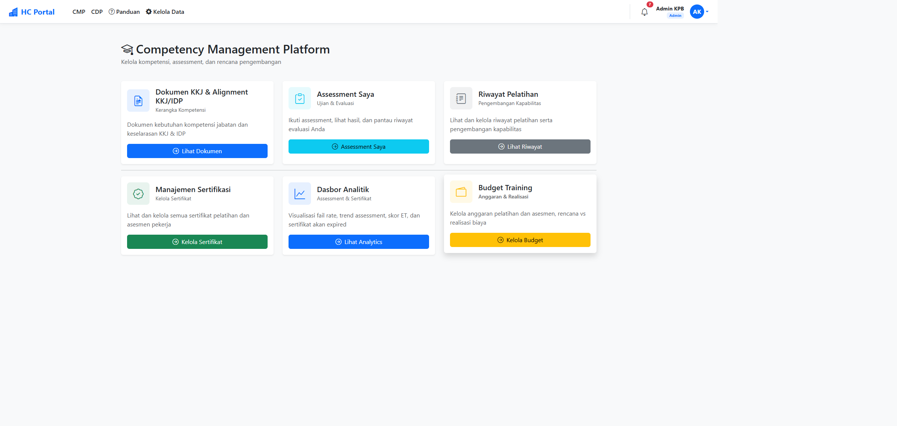
Detail: Panduan Operasional HC — Bab 2 CMP (8 task lengkap)
BAGIAN 1 — CMP
Riwayat assessment + training tim real-time per pekerja, dengan filter cascade + export Excel
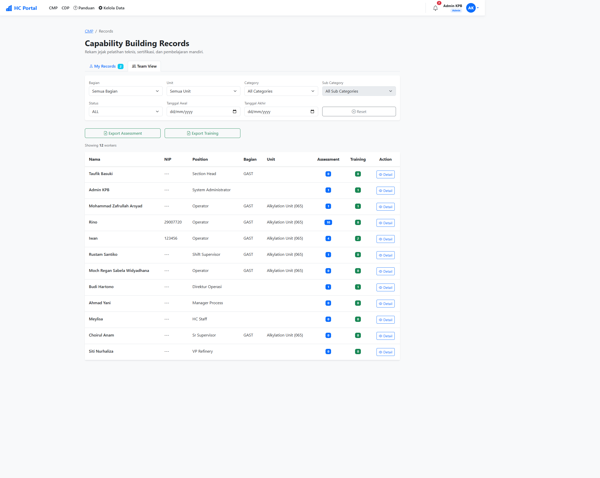
Detail: Panduan Operasional HC §2.4 — Records Team
BAGIAN 1 — CMP
Dasbor monitor kesehatan assessment: 4 metric + 6 tab chart + export Excel
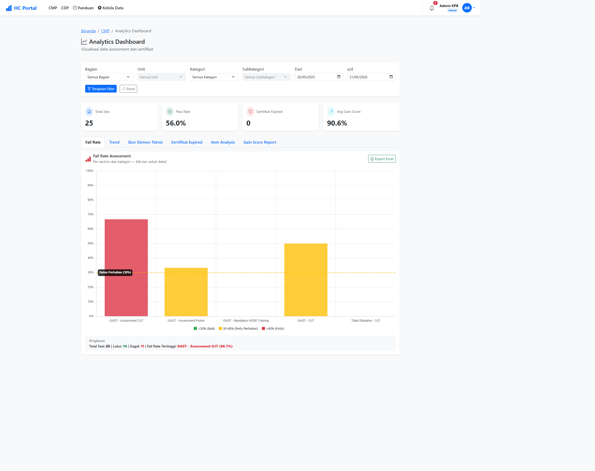
Detail: Panduan Operasional HC §2.5 — Analytics Dashboard + Export
BAGIAN 1 — CMP
Dua jenis assessment utama di HC Portal
BAGIAN 1 — CMP
Cakupan jenis ujian kompetensi di KPB di luar Proton
BAGIAN 1 — CMP
Persiapan → Pelaksanaan → Penilaian
BAGIAN 1 — CMP
Mengukur efektivitas training secara terstandar
Detail: Panduan Operasional HC §2.6 — Pre/Post Test setup & monitor
BAGIAN 1 — CMP
Perpustakaan dokumen development plan + KKJ per pekerja
BAGIAN 2 — ASSESSMENT PROTON
Format penilaian per tahun · 1 track per role (Panelman / Operator)
Tahun 1 & 2 ujian online (single/multi/essay) · Tahun 3 interview offline panel juri. Wajib lulus Tahun N untuk lanjut Tahun N+1.
BAGIAN 2 — ASSESSMENT PROTON
Ujian Online (Pilihan Ganda)
BAGIAN 2 — ASSESSMENT PROTON
Interview Offline (Tatap Muka, Panel Juri)
BAGIAN 3 — PROTON LIFECYCLE & COACHING
5 aspek pembanding antara Tahun 1, 2, dan 3
| Aspek | Tahun 1 | Tahun 2 | Tahun 3 |
|---|---|---|---|
| 🎯 Fokus | Dasar & pengenalan unit kerja | Lanjutan & pendalaman proses | Mahir & penguasaan penuh |
| 📦 Deliverable | Khusus Tahun 1 (beda dari Th 2 & 3) | Khusus Tahun 2 (beda dari Th 1 & 3) | Khusus Tahun 3 (beda dari Th 1 & 2) |
| 🔄 Coaching Process | Submit Evidence → Multi Approval → Final Assessment | Submit Evidence → Multi Approval → Final Assessment | Submit Evidence → Multi Approval → Final Assessment Interview |
| 📝 Assessment | Ujian online (pilihan ganda) | Ujian online (pilihan ganda) | Interview offline panel juri |
| 🏆 Akhir Tahun | Sertifikasi Th 1 → lanjut Tahun 2 | Sertifikasi Th 2 → lanjut Tahun 3 | Sertifikasi Final → Pekerja Kompeten Penuh |
BAGIAN 3 — PROTON LIFECYCLE & COACHING
HC = Final Reviewer (Reviewer ke-3) di approval chain
Detail: Panduan Operasional HC §3.8 — Reviewer Chain
BAGIAN 3 — PROTON LIFECYCLE & COACHING
Program pendampingan 3 tahun · 2 track independen (Panelman + Operator)
3 track terpisah · hierarki & deliverable independen
3 track terpisah · hierarki & deliverable independen
BAGIAN 3 — PROTON LIFECYCLE & COACHING
Track → Kompetensi → Sub-Kompetensi → Deliverable
BAGIAN 3 — PROTON LIFECYCLE & COACHING
Persiapan Silabus → Review Multi-Role → Assessment Online → Sertifikasi
BAGIAN 3 — PROTON LIFECYCLE & COACHING
Silabus Mahir → Review Multi-Role → Interview Offline → Sertifikasi Final
BAGIAN 3 — PROTON LIFECYCLE & COACHING
5 metric global + filter cascade + tab Bottleneck Report
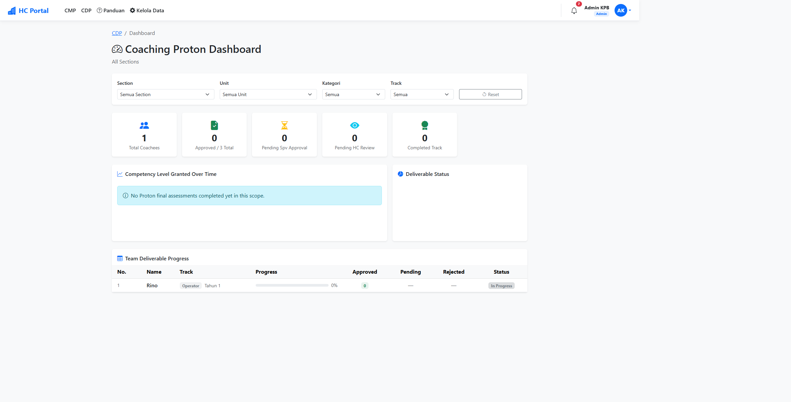
Detail: Panduan Operasional HC §3.3 & §3.5 — Dashboard + Bottleneck
BAGIAN 3 — PROTON LIFECYCLE & COACHING
Histori coaching per pekerja — progress visual Th 1/2/3 + export Excel
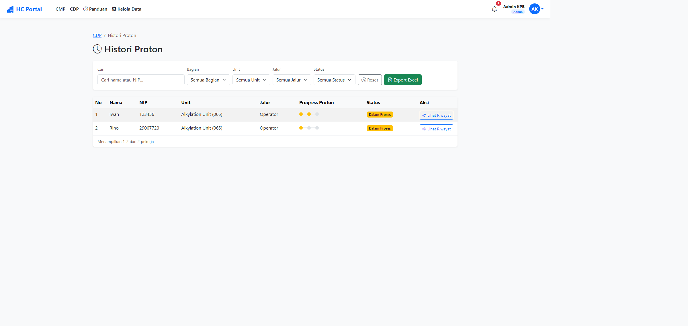
Detail: Panduan Operasional HC §3.4 — Histori Proton + Export
BAGIAN 3 — PROTON LIFECYCLE & COACHING
Lifecycle sertifikat: schedule renewal → notif → assessment → sertifikat baru
Detail: Panduan Operasional HC §3.7 & §5.10 — Renewal Management
BAGIAN 4 — ADMIN PANEL
4 section ABCD — total 14 menu yang HC kelola
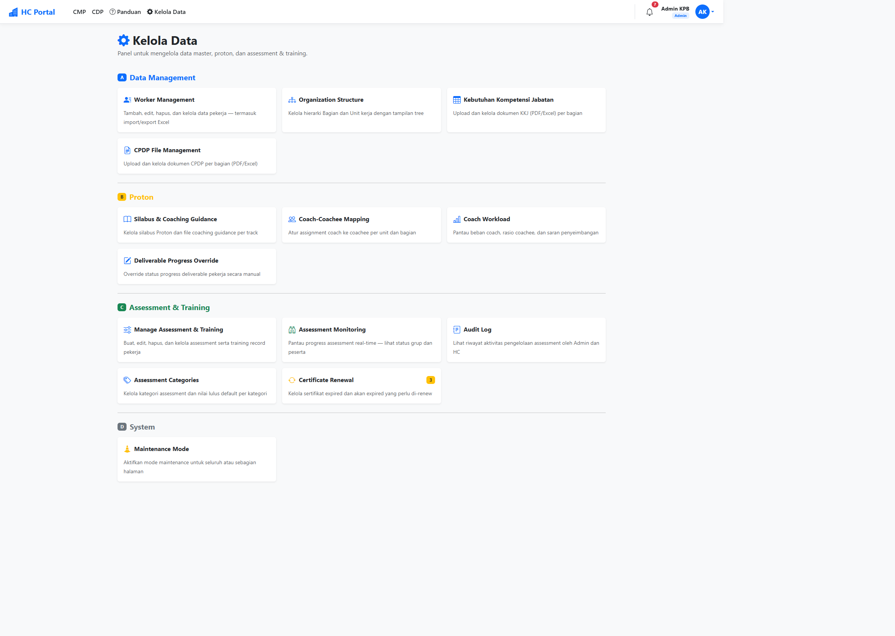
Detail: Panduan Operasional HC — Bab 5 Admin Panel (16 task lengkap)
BAGIAN 4 — ADMIN PANEL
CRUD pekerja + import/export Excel · role badge color-coded
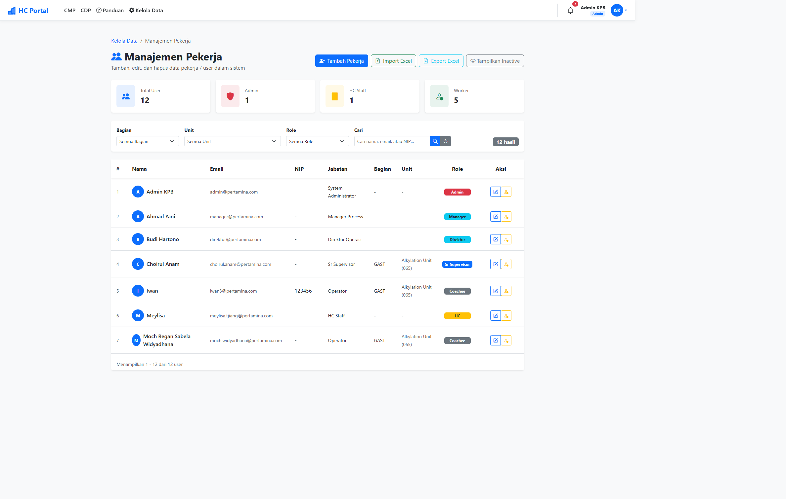
Detail: Panduan Operasional HC §5.1, 5.4, 5.5 — Pekerja + Bank Soal + Import
BAGIAN 4 — ADMIN PANEL
Group by coach · expandable row · bulk import/export Excel
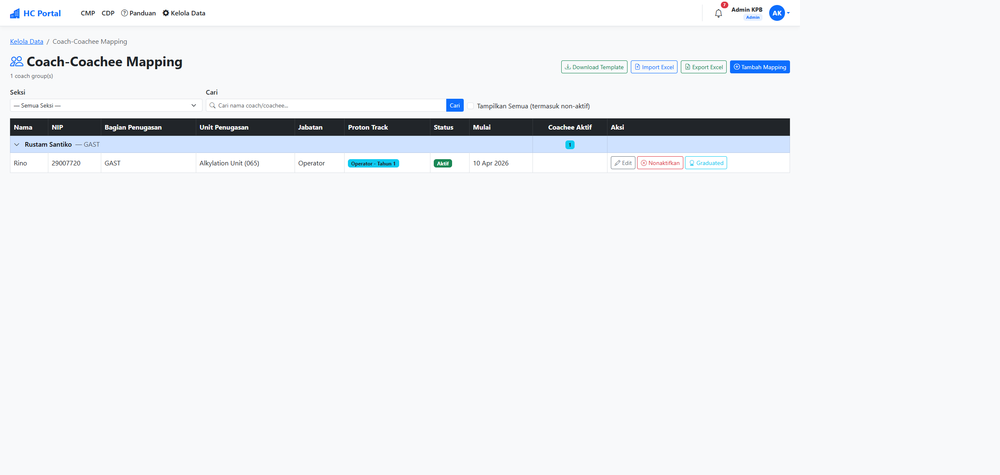
Detail: Panduan Operasional HC §5.9 & §3.6 — Mapping + Workload
BAGIAN 4 — ADMIN PANEL
ProtonData Index — 3 tab: Status Sync · Silabus · Coaching Guidance
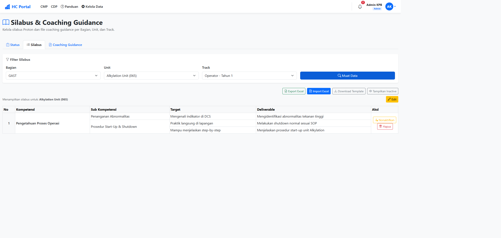
Detail: Panduan Operasional HC §4.1 & §4.2 — Silabus + Guidance
BAGIAN 4 — ADMIN PANEL
Fallback manual saat data Proton gagal sync — setiap override ter-log di Audit Log
Detail: Panduan Operasional HC §4.3 — Override Data Pekerja
BAGIAN 4 — ADMIN PANEL
Real-time tracking grup assessment · force-close + reset + extra time controls
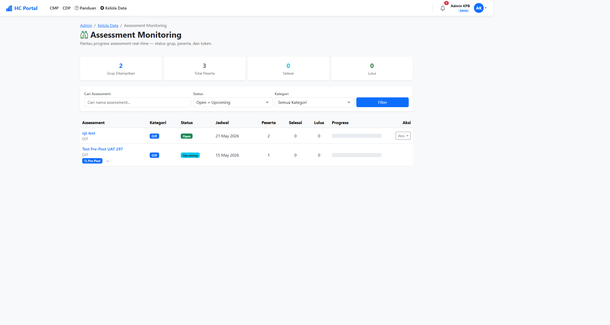
Detail: Panduan Operasional HC §5.6, 5.7, 5.8 — Create / Edit / Monitor
BAGIAN 4 — ADMIN PANEL
Audit Log untuk investigasi + Maintenance Mode untuk freeze modul saat update
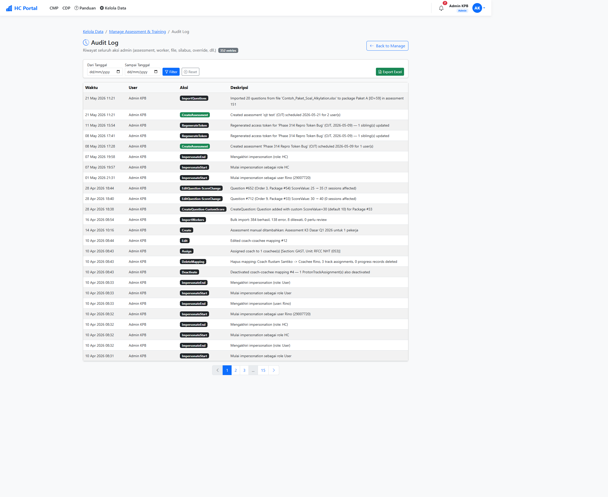
Detail: Panduan Operasional HC §5.14, 5.15, 5.16 — Audit / Maintenance / Impersonate
BAGIAN 5 — CLOSING
Checklist harian, mingguan, bulanan
BAGIAN 5 — CLOSING
Dokumen detail untuk self-service kapan saja
Pertanyaan? Diskusi terbuka.
Kontak & Support
Tim Human Capital KPB